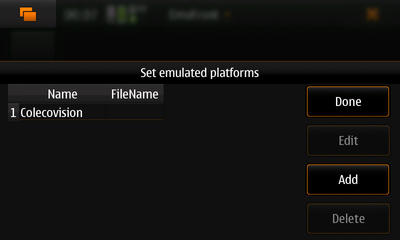
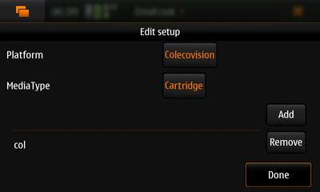
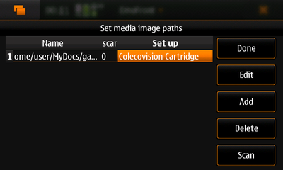
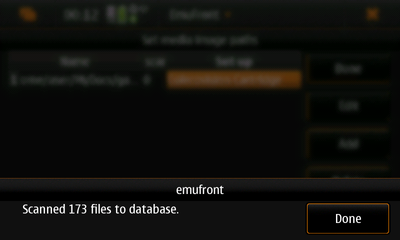
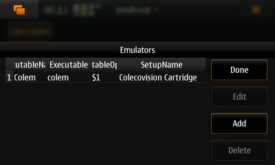
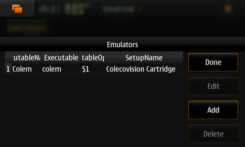

Welcome to EmuFront!
About
EmuFront is an universal (multi-system) computer and video game console emulator front-end implemented in
QT, C++ and SQLite targeted on Linux operating systems.
Although this project is currently hosted at Maemo Garage,
this is pure QT project and doesn't have any Maemo specific
dependencies. You can use EmuFront on any QT Linux platform. I'm
planning to release two GUI options PC and Mobile (MeeGo,
Maemo, ...)
EmuFront is Open Source Software licenced under GPL version 2.
Project
Features
- Configure platforms (Commodore 64, Sega Master
System, ...)
- Configure media types (Cartridge, floppy disk,
...)
- Configure setups (platform, media type
and supported file types)
- Configure and scan filepaths containing
disk/rom/tape-images
- Configure emulators (executable, command line
options, supported setup)
- Launch emulators with disk/rom/tape-images
- Multiple configurations for single emulator
- Multiple media images can be selected to a single
emulator launch command
- ...
Prequisites
Instructions
- Set the directory path for temporary files
- Add platform(s) (e.g. Colecovision)
- Add media type(s) (e.g. Cartridge)
- Add setup(s): Assign a media type to platform and
set supported file extensions (e.g. 'dsk')
-
- Currently only zipped files are
supported.
- All the files inside a zip archive with extensions configured by user
will be scanned to database
- A Zip archive can contain 1...n files
- TODO: If no extensions are configured for
setup, the zip archive will be used AS IS with
emulator configuration (this is useful with M.A.M.E.
and similar emulators)
- Assign path to files with setup, select path scan
the files
- Configure emulator
- Set an unique name for emulator
configuration, one emulator can have many
configurations with different name
- Set the emulator executable or path to
executable if the exutable is not on the
system path
- Set the command line options
- $1 is a placeholder for filename in the command parameters, this is obligatory
- Multiple files are also supported using placeholders $1 ... $n, e.g. '-diska $1 -diskb $2'
- In the main window select a platform and a media
type, press update, selected file(s), emulator and press
launch
- Multiple files can be selected and they all will
be extracted to /tmp/
- More detailed instructions will be added later...
Screenshots
v0.01a
Maemo on N900




 

v0.00a
PC UI/Scanning media images
v0.01a
PC UI/Main window

EmuFront © 2010 Mikko Keinänen